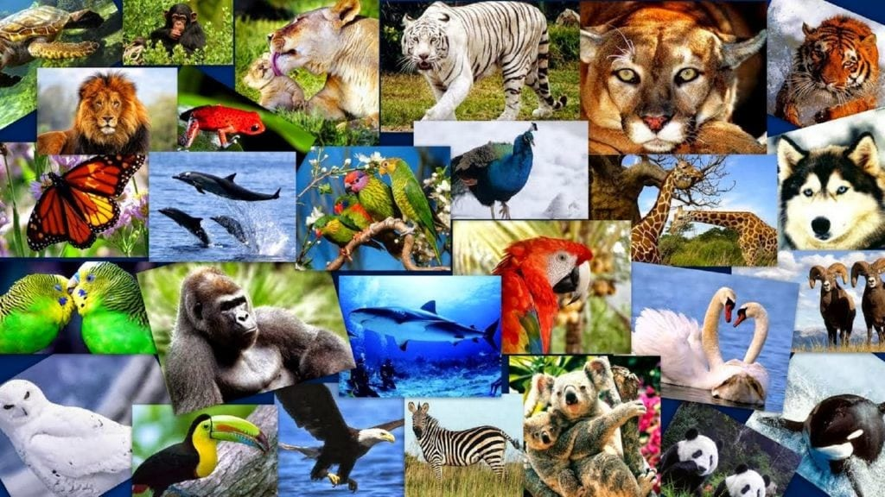
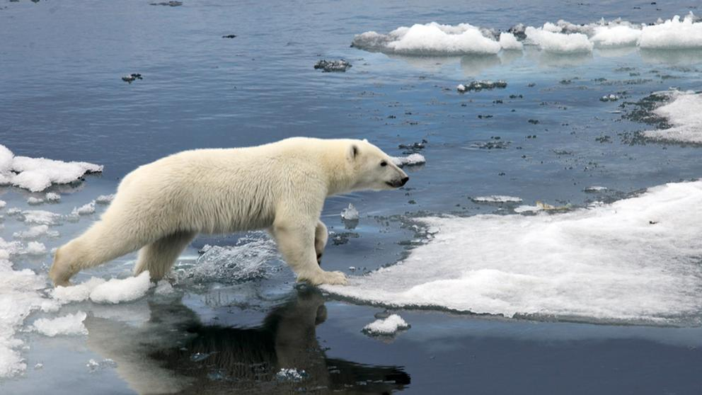
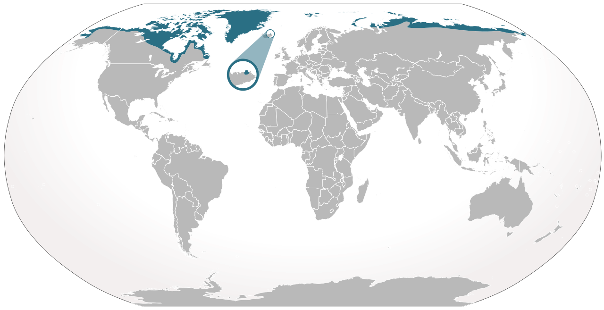
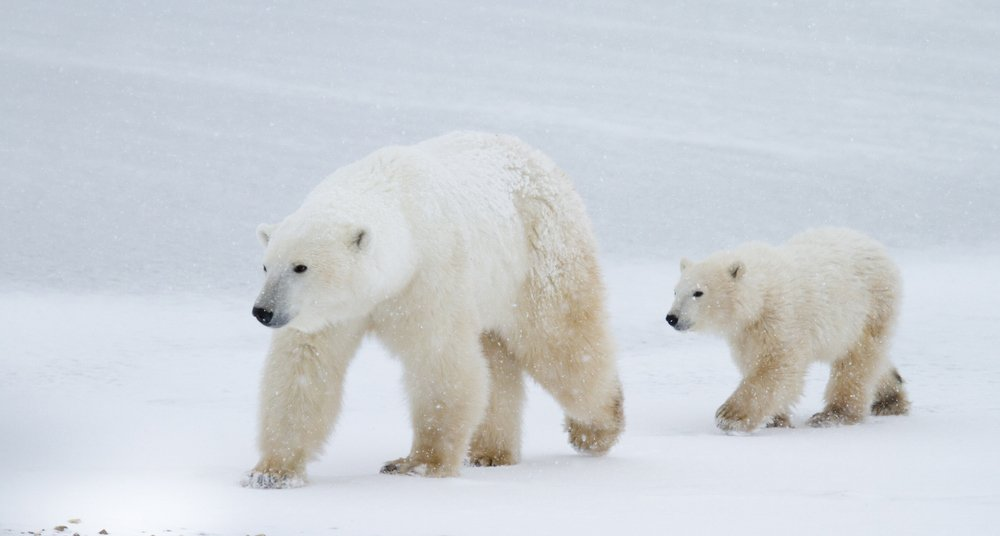
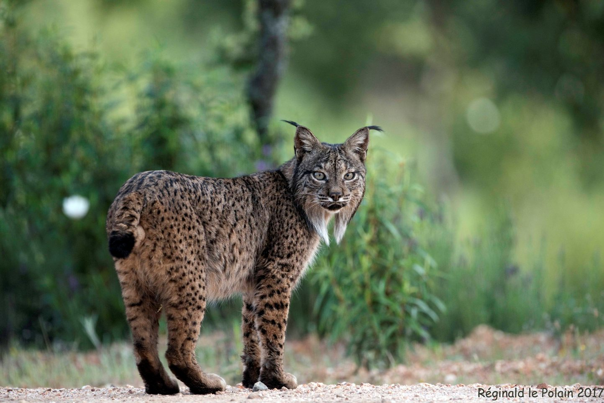
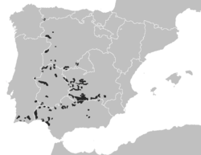
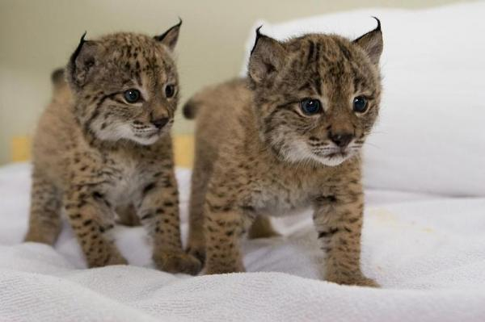
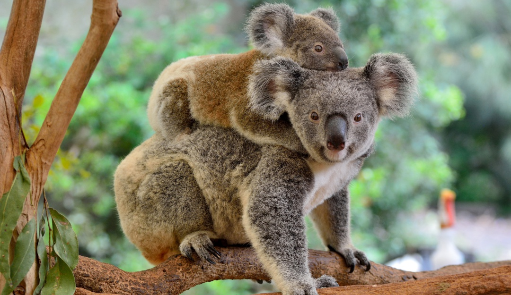
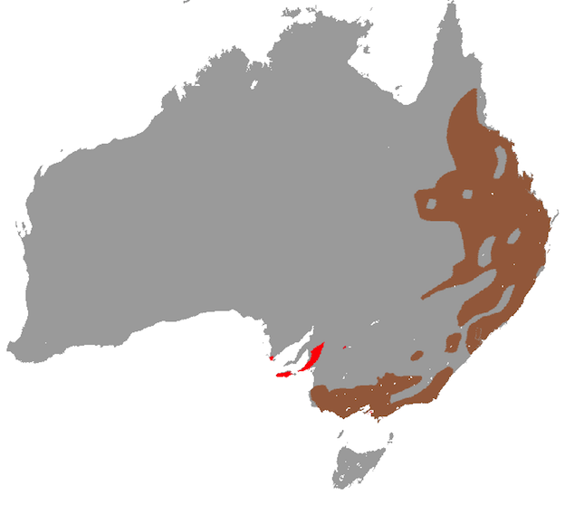
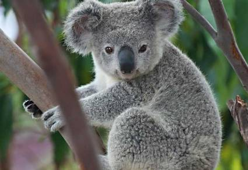

Animales en peligro de extinción

Actualmente (según Nathonal geographic) existen 5200 especies de animales en peligro de extinción, por lo que nombrar a todas ellas no parece una opción sencilla
La siguiente lista recoge 12 de esas 5200 especies
- Gorila de montaña
- Oso polar
- Lince ibérico
- Tigre de Sumatra
- Rinoceronte blanco
- Leopardo de las nieves
- Oso panda
- Chimpancé común
- Pangolín
- Orangután de Borneo
- Ajolote
- Atún rojo
Oso polar u oso blanco
Es una de las especies más amenazadas y a la que se le pronostica que solo le queda un siglo más de existencia. Estas además están en peligro de extinción por culpa de la acción humana; somos la causa del cambio climático y este produce el deshilo del Ártico o Polo Norte, que es su hábitat natural

¿Cuántos quedan?
Actualente quedan tan solo unos 20.000 ejemplares en total
Algunos datos sobre ellos
- Habitan en los siguientes lugares:
- Oeste de Alaska y la isla de Wrangel
- Norte de Alaska
- Canadá (60 % de los ejemplares)
- Groenlandia
- Svalbard-Tierra de Francisco José
- Siberia

- Su nombre científico es Ursus maritimus
- Es una especie de mamífero carnívoro de la familia de los osos

Lince ibérico
El lince ibérico es una de las especies que actualmente está un mayor peligro de extinción. Los motivos de esta situación van desde la caza ilegal, hasta la destrucción de su hábitat. Es un ejemplo más de como la humanidad esta acabando con algunas especies

¿Cuántos quedan?
En 2012 se extimo que tan solo queda 156 ejemplares en libertad en total. Esta cifra esta subiendo poco a poco gracias a la actuación de algunas asociaciones, en 2017 la cifra aumento hasta 589 ejemplares
Como podemos proteger proteger al lince ibérico
El estado debe tomar las siguientes medidas:
- Crear reservas naturales y areas protegidas
- Incrementar la vigilancia en estas y cuidar la cantidad de tráfico en vehículos
- Endurecer las leyes contra el maltrato animal, la caza furtiva y el tráfico ilegal de especies
Para proteger a los linces podemos tomar diversas medidas:
- Apoyar económicamente a asociaciones dedicadas a este especie
- Si visitamos zonas en las que habitan debemos recordar cuidar el entorno siguiendo estas normas básicas:
- No ensuciar el entorno de ningún modo (evitar especialmente tirar colillas y vidrios)
- No molestar a los animales
- Denunciar a la policía si vemos algún acto ilegal por parte de alguien
- Ayudar a educar y concienciar de la importancia de cuidado del lince ibérico y su hábitat
Algunos datos sobre ellos
- Habitan en los siguientes lugares:
- Andalucía, dónde hay 448 ejemplares
- Extremadura (Badajoz)
- Castilla-La Mancha (Ciudad Real y Toledo)
- Portugal (Mértola).

- Su nombre científico es Lynx Pardinus
- Es una especie de felino carnívoro que se alimenta principalmente de conejos, también se alimentan de pájaros y pequeños mamíferos

Koalas
Los expertos afirman que los koalas estan funcionalmente extintos. La esecie esta cerca de desaparecer en la próxima generación debido a la pérdida de su hábitat natural y la ausencia de una cantidad suficiente de adultos en edad reproductora que pueda sostener su evolución

¿Cuántos quedan?
Actualente quedan tan solo unos 80.000 ejemplares en total.
Algunos datos sobre ellos
- Los koalas habitan en libertad en Australia (en las zonas señaladas del mapa)

- Existen koalas en cautiverio en zoos de todo el mundo
- Su nombre científico es Phascolarctos cinereus
- Es una especie de marsupial diprotodonto de la familia Phascolarctidae
